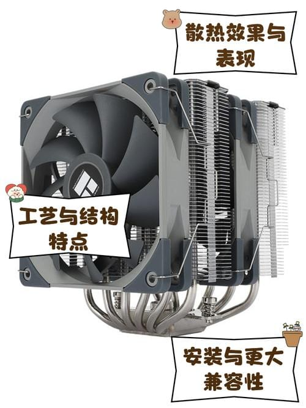

利民 PA120

百元级双塔散热器的性价比屠夫，6 热管双塔配两把 12cm 风扇，解热能力越级挑战旗舰，兼容 AM4/AM5 与 LGA1700 平台，是预算装机的散热神器。
客观评测
PA120 采用双塔六热管结构，6×6mm 热管配回流焊工艺，标配两把 120mm TL-C12 风扇（约 1550RPM），整机高度约 155mm，兼容多数中塔机箱。官方标称解热能力约 250W 级别，实测压制 i5-13600K、R7 7700X 级别处理器满载温度表现优异。支持 Intel LGA1700/1200 与 AMD AM4/AM5 平台，附赠 TF7 硅脂与全套扣具，6 年质保。
主观点评
PA120 是那种让人感叹一分钱十分货的产品，一百多块买到过去三四百元的散热规格。装上后烤机温度比原装散热低了几十度，安静程度也超出预期。扣具安装确实不算优雅，螺丝多、说明书简陋，第一次装要有点耐心。但点亮之后你会忘记这些小抱怨——这个价位能压住中高端 CPU，PA120 几乎是无解的存在。
优点与不足
- 价格仅为旗舰双塔的三分之一
- 解热能力越级，压中高端 CPU 轻松
- 全平台扣具齐全，附赠硅脂
- 扣具手感一般，安装略费劲
- 风扇满速噪音可闻
参数规格
| 类型 | 双塔双风扇风冷散热器 |
|---|---|
| 热管 | 6×6mm 回流焊热管 |
| 尺寸 | 约 125×130×155mm |
| 风扇 | 2×120mm TL-C12 风扇（约 1550RPM） |
| 风量/风压 | 约 66CFM / 1.53mmH2O（单扇） |
| 噪音 | 约 25.6dB（满速） |
| TDP 支持 | 约 250W 级别 |
| 平台 | Intel LGA1700/1200、AMD AM4/AM5 |
| 重量 | 约 840g（含风扇） |
| 鳍片 | 穿片工艺铝制鳍片 |
| 附件 | TF7 硅脂 + 全平台扣具 |
| 质保 | 6 年质保 |